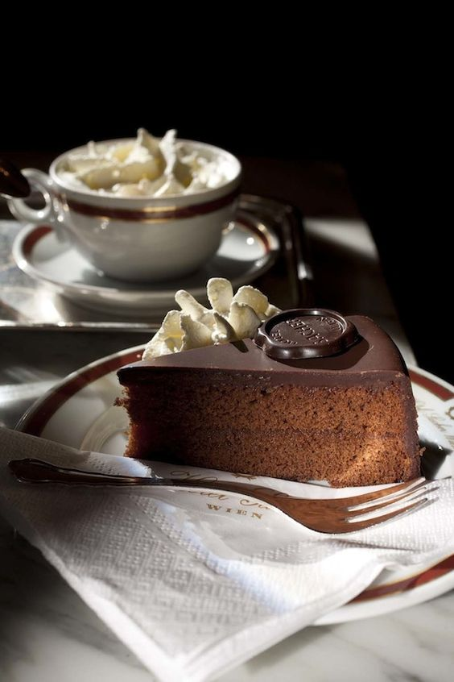

Mleko i šećer prokuvati, dodati vanilin šećer, maslac, keks i orahe. Skloniti sa vatre pa dodati jedno po jedno jaje.
Ostaviti fil da se dobro ohladi, a nakon toga filovati oblande.
oceni
oceni
Sufle
Na tihoj vatri istopiti margarin i čokoladu da se dobije glatka masa. 2. Dok se to topi dobro umutiti 4 jajeta i postepeno dodati šećer. 3. U umućena jaja i šećer dodati rastopljenu masu.. 4.Kada se sve to dobro umuti dodati brašno, još malo mutiti, pa zatim u kalup za projice staviti papirne korpice, prečnika 6-7 cm, i u njih sipati masu do vrha. 5. Peći na temperaturi od 220°C 7 min. dok se ne napravi tanka kora.
oceni
oceni

Saher torta
Priprema: u posudu usuti šećer, vanilin šećer, omekšati puter i izmešati mikserom. Zatim dodati žumanca i ponovo nastaviti mešati. Odvojeno od toga, čokoladu otopiti na pari i tako istopljenu je lagano sipati u pripremljenu smesu, neprestano mešajući. Belanca je potrebno odvojeno umutiti, posoliti, dodati i šećer u prahu i dobro izmutiti. Trećinu dobijenog šama od belanaca, lagano umutiti u pripremljenu prvu smesu, a u ostatak šama umešati sa brašnom i praškom za pecivo. Nakon svega, spojiti obe smese. Smesu je potrebno peći 45-50 minuta na 180 stepeni. Nakon što se pečeni biskvit ohladi, potrebno ga je prerezati vodoravno na dva dela.
Polovinu džema namazati po donjoj polovini torte, a drugu polovinu na vrh torte. Za glazuru, puter otopiti na laganoj vatri, lagano mešati, dodati čokoladu i mešati dok se čokolada u potpunosti ne otopi. Gotovu glazuru preliti preko torte.
Tortu je potrebno izvaditi iz frižidera, nekih 30 minuta pre posluživanja, kako bi glazura malo omekšala i kako ne bi popucala prilikom rezanja.